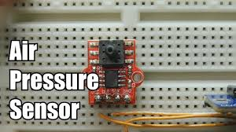

Performed data cleaning , Feature Engineering, Feature selection and developed various machine learning models and eventually found that the Random forest model was providing the best accuracy among all the model trained with 99.5% accuracy. This project was dockerized and deployed on AWS EC2 instance using Elastic Container Registry(ECR) instance. CI/CD pipeline was implemented using Github Actions .

The Air Pressure System Fault Detection Project is a machine learning project that uses a XGBoost classifier model to predict faults in a vehicle's air pressure system. The model is trained on sensor data stored in MongoDB Atlas and predictions are made through batch predictions. The data was cleaned, outliers handled, and missing values imputed before training the model, resulting in an accuracy of 99.6% with a cost of 2950. The project includes a continuous training pipeline, model evaluation, and batch prediction using Apache Airflow scheduler. The code is deployed in AWS using EC2 instances, ECR, and S3 Bucket, and is dockerized with CI/CD pipeline implemented through Github Actions. The predictions help the client reduce costs due to unnecessary repairs.
Designed and developed scalable end to end machine learning pipeline using mlops and dvc; and deployed it on Heroku using Docker and CircleCI. Collected the data from the client and performed data cleaning, did feature engineering and feature selection.Developed model pipeline that stores the validated data into the sql lite database and later from the database , the data was exported into csv file format so that we can train the model on the filtered data. Also developed an entire website system in which we can provide path for the test data and then predict the result.Version control system was also used in this project. This project was dockerized so that it can run independent of the Operating System.

Atlix hardware is hardware company located in Ahmedabad, Gujarat that deals with selling the Hardware component. The data was imported in power BI and performed ETL to clean up the dirty records.I have analysed the data using MYSQL. Later this data was pulled in power BI for further ETL.Prepared data model for above database .Here star Schema.Used SQL to perform various analysis such as sales growth in services and parts. SLA’s for service orders, detected inefficiencies in their sales and marketing process. Used Power BI for plotting various trends.
Web scraping is a technique for extracting data from websites. The purpose of web scraping can vary widely, but some common uses include:
Data collection: Web scraping can be used to gather large amounts of data from websites, which can then be used for various purposes such as research, analysis, or creating a dataset for machine learning models.
Price comparison: Web scraping can be used to compare prices of products across different websites, which can help consumers find the best deals.
Lead generation: Web scraping can be used to gather contact information such as emails and phone numbers for lead generation purposes.
Sentiment analysis: Web scraping can be used to gather data from social media platforms to analyze the sentiment of public opinion on a particular topic.
News aggregation: Web scraping can be used to gather news articles from multiple websites and aggregate them in one place. This project demonstrate how to scrape product information from Flipkart using Python and the Beautiful Soup library